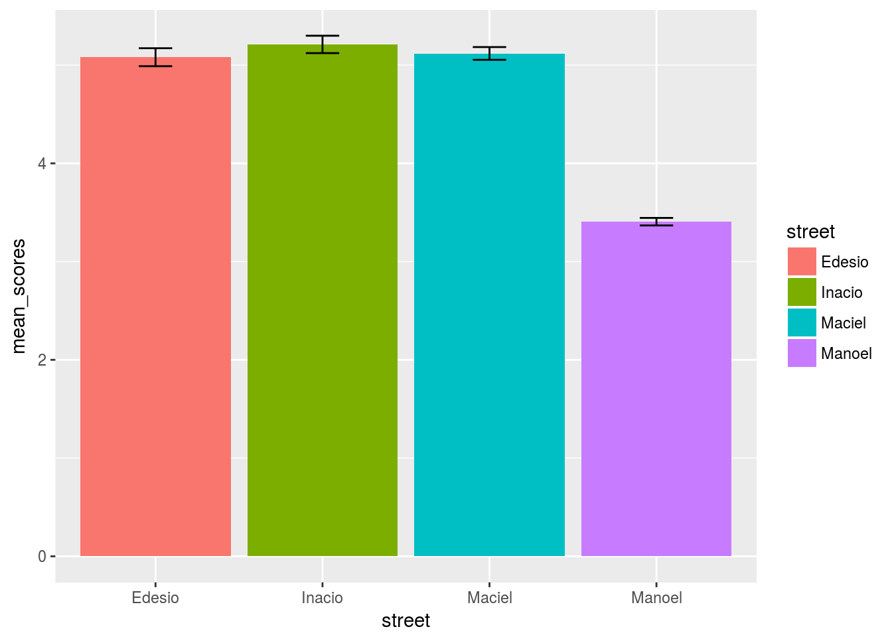
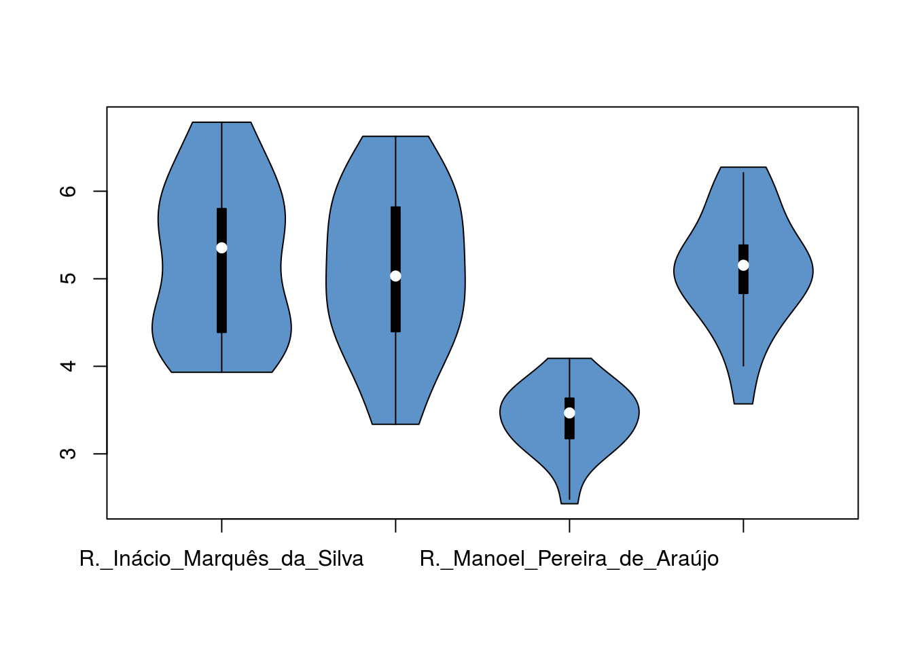

analisaPorRua
Impressão Geral das Ruas
Se formos olhar os ICs por rua:
data <- read.csv("qscores-df.csv", header = TRUE)
edesio_scores = filter(data, street == "R._Edésio_Silva")$qscore
edesio_sd = sd(edesio_scores)
inacio_scores = filter(data, street == "R._Inácio_Marquês_da_Silva")$qscore
inacio_sd = sd(inacio_scores)
manoel_scores = filter(data, street == "R._Manoel_Pereira_de_Araújo")$qscore
manoel_sd = sd(manoel_scores)
maciel_scores = filter(data, street == "R._Maciel_Pinheiro")$qscore
maciel_sd = sd(maciel_scores)
new_frame = data.frame(mean_scores = c(mean(maciel_scores), mean(manoel_scores), mean(edesio_scores), mean(inacio_scores)), street = c("Maciel", "Manoel", "Edesio", "Inacio"), ci = c(maciel_sd * 1.96 / length(maciel_scores), manoel_sd * 1.96 / length(manoel_scores), edesio_sd * 1.96 / length(edesio_scores), inacio_sd * 1.96 / length(inacio_scores)))
ggplot(new_frame, aes(x=street, y=mean_scores, fill=street)) +
geom_bar(position=position_dodge(), stat="identity") +
geom_errorbar(aes(ymin=mean_scores-ci, ymax=mean_scores+ci),
width=.2, # Width of the error bars
position=position_dodge(.9))
- A Manoel P. de Araújo realmente está bem abaixo das demais ruas
- As outras três ruas possuem valores médios próximos, que podem ser confundíveis
E aqui surge então uma questão: será que apesar dessa semelhança nas médias, essas três ruas são similares assim? Para isso computamos os violin plots de cada rua.
value <- data$qscore
with(data , vioplot( value[street=="R._Inácio_Marquês_da_Silva"] , value[street=="R._Edésio_Silva"], value[street=="R._Manoel_Pereira_de_Araújo"], value[street=="R._Maciel_Pinheiro"], col=rgb(0.1,0.4,0.7,0.7) , names=c("R._Inácio_Marquês_da_Silva","R._Edésio_Silva","R._Manoel_Pereira_de_Araújo", "R._Maciel_Pinheiro") ))
A partir da análise dos violin plots, alguns pontos podem ser destacados:
- A Manoel P. de Araújo foi realmente a rua com as notas em gerais mais baixas o pode ser um indicativo de problema na rua. Analisando com mais cuidado as imagens da rua mais abaixo, pode-se perceber que esses valores baixos eram esperados, já que se trata de uma área antiga e pouco cuidada do centro da cidade (bem degradada!);
- A Inacio Marques e a Edesio silva tiveram valores mais espalhados com uma maior concentração em algumas regiões, o que era esperado dado variações nos tipos de locais nessas ruas (mais ou menos verde, mais ou menos conservados);
- A Maciel Pinheiro tem uma maior concentração de valores com notas parecidas, o que era esperado dado a maior semelhança de locais ao longo de toda a rua. Isso a torna mais homogênea que a Inacio e a Edesio, porém mais heterogênea que a Manoel P. de Araujo;
- A Inacio, Edesio e Maciel possuem QScores que variam em 2 ou mais pontos. Essa grande variação merece ser analisada com mais cuidado já que pode ser um indicativo de problemas nas ruas!
Para complemento numérico dos violin plots, o sumário de cada rua na seguinte ordem: Inacio, Edesio, Maciel e Manoel.
summary(filter(data, street == "R._Inácio_Marquês_da_Silva")$qscore)## Min. 1st Qu. Median Mean 3rd Qu. Max.
## 3.931 4.388 5.353 5.210 5.801 6.788summary(filter(data, street == "R._Edésio_Silva")$qscore)## Min. 1st Qu. Median Mean 3rd Qu. Max.
## 3.338 4.397 5.031 5.080 5.819 6.627summary(filter(data, street == "R._Maciel_Pinheiro")$qscore)## Min. 1st Qu. Median Mean 3rd Qu. Max.
## 3.571 4.833 5.154 5.119 5.384 6.274summary(filter(data, street == "R._Manoel_Pereira_de_Araújo")$qscore)## Min. 1st Qu. Median Mean 3rd Qu. Max.
## 2.431 3.174 3.468 3.406 3.636 4.091Analisando em detalhe cada rua
Para entender um pouco melhor cada rua, tentamos analisar os QScores obtidos ao longo da rua.
Inacio Marques
summary_inacio = filter(data, street == "R._Inácio_Marquês_da_Silva") %>% group_by(num) %>% summarise(media_ponto = mean(qscore), sd = sd(qscore))
summary_edesio = filter(data, street == "R._Edésio_Silva") %>% group_by(num) %>% summarise(media_ponto = mean(qscore), sd = sd(qscore))
summary_maciel = filter(data, street == "R._Maciel_Pinheiro") %>% group_by(num) %>% summarise(media_ponto = mean(qscore), sd = sd(qscore))
summary_manoel = filter(data, street == "R._Manoel_Pereira_de_Araújo") %>% group_by(num) %>% summarise(media_ponto = mean(qscore), sd = sd(qscore))summary_inacio## # A tibble: 5 × 3
## num media_ponto sd
## <int> <dbl> <dbl>
## 1 54 5.049375 0.7751654
## 2 120 5.824043 1.1426385
## 3 239 5.963948 0.3130889
## 4 360 4.982353 0.6778414
## 5 500 4.232576 0.2360467Para a Inacio Marques percebemos uma variação de aproximadamente 1.7 nas médias do QScore do número 500 (região de muros logo após o museu) e do número 239 (regiao residencial no quarteirão seguinte ao museu). Esta diferença parece um indicativo de variação entre tipos, ou qualidades, de locais na rua.
Analisando as imagens de cada ângulo em cada ponto da rua, pode-se observar diferenças de 1 ou mais pontos no QScore entre ângulos do mesmo número. Por exemplo: - no número 54, as variações para os ângulos 203 e 293 - no número 120 a baixa nota do ângulo 203 - no número 239 existe uma maior homogeneidade - no número 360 os números 90 e 203 - no número 500 também temos uma maior homogeneidade


Combinando as variações de QScores por ângulos, com as variações nas médias por números, consegue-se perceber, conforme esperado, que os locais com menor conservação e menos verde apresentam QScores mais baixos, indicando que ações de melhoria/cuidado poderiam ser direcionados para essas áreas. Além disso, com esse nível de detalhe conseguimos perceber que a Inácio Marques é uma rua que possui uma área muito pouco cuidada (número 500) e outras áreas com níveis de cuidado variados, onde poderíamos apontar setores nos números 54, 120 e 360, principalmente, que poderiam receber melhores cuidados.
Edesio Silva
summary_edesio## # A tibble: 5 × 3
## num media_ponto sd
## <int> <dbl> <dbl>
## 1 70 4.749495 1.3419225
## 2 306 5.509479 0.6110485
## 3 602 4.918967 1.1838373
## 4 1136 4.408774 0.3125229
## 5 1546 5.814258 0.3402293Para a Edesio percebemos uma variação de aproximadamente 1.4 nas médias do QScore do número 1136 () e do número 1546 (). Esta diferença parece um indicativo de variação entre tipos, ou qualidades, de locais na rua.


Para a Edesio Silva
Maciel Pinheiro
summary_maciel## # A tibble: 5 × 3
## num media_ponto sd
## <int> <dbl> <dbl>
## 1 130 5.097402 0.5245478
## 2 190 5.427872 0.8307156
## 3 248 4.942481 0.5408222
## 4 284 5.169547 0.5217971
## 5 360 4.955728 1.0178216maciel <- filter(data, street == "R._Maciel_Pinheiro") %>% group_by(num) %>% arrange(street, num, angle) %>% select(url, street, num, angle, qscore)
show_street_data(maciel)## <div class='row'><div class='col-xs-3'><img src='https://contribua.org/bairros/norte/centro/R._Maciel_Pinheiro_130_90.jpg' width='300px'><div class='caption'>R._Maciel_Pinheiro 130, 90 -> 5.009101</div></div><div class='col-xs-3'><img src='https://contribua.org/bairros/norte/centro/R._Maciel_Pinheiro_130_180.jpg' width='300px'><div class='caption'>R._Maciel_Pinheiro 130, 180 -> 5.847765</div></div><div class='col-xs-3'><img src='https://contribua.org/bairros/norte/centro/R._Maciel_Pinheiro_130_270.jpg' width='300px'><div class='caption'>R._Maciel_Pinheiro 130, 270 -> 4.633242</div></div><div class='col-xs-3'><img src='https://contribua.org/bairros/norte/centro/R._Maciel_Pinheiro_130_360.jpg' width='300px'><div class='caption'>R._Maciel_Pinheiro 130, 360 -> 4.899499</div></div></div><div class='row'><div class='col-xs-3'><img src='https://contribua.org/bairros/norte/centro/R._Maciel_Pinheiro_190_90.jpg' width='300px'><div class='caption'>R._Maciel_Pinheiro 190, 90 -> 5.018308</div></div><div class='col-xs-3'><img src='https://contribua.org/bairros/norte/centro/R._Maciel_Pinheiro_190_180.jpg' width='300px'><div class='caption'>R._Maciel_Pinheiro 190, 180 -> 4.471002</div></div><div class='col-xs-3'><img src='https://contribua.org/bairros/norte/centro/R._Maciel_Pinheiro_190_270.jpg' width='300px'><div class='caption'>R._Maciel_Pinheiro 190, 270 -> 5.94776</div></div><div class='col-xs-3'><img src='https://contribua.org/bairros/norte/centro/R._Maciel_Pinheiro_190_360.jpg' width='300px'><div class='caption'>R._Maciel_Pinheiro 190, 360 -> 6.274417</div></div></div><div class='row'><div class='col-xs-3'><img src='https://contribua.org/bairros/norte/centro/R._Maciel_Pinheiro_248_90.jpg' width='300px'><div class='caption'>R._Maciel_Pinheiro 248, 90 -> 5.245809</div></div><div class='col-xs-3'><img src='https://contribua.org/bairros/norte/centro/R._Maciel_Pinheiro_248_180.jpg' width='300px'><div class='caption'>R._Maciel_Pinheiro 248, 180 -> 5.20904</div></div><div class='col-xs-3'><img src='https://contribua.org/bairros/norte/centro/R._Maciel_Pinheiro_248_270.jpg' width='300px'><div class='caption'>R._Maciel_Pinheiro 248, 270 -> 5.182902</div></div><div class='col-xs-3'><img src='https://contribua.org/bairros/norte/centro/R._Maciel_Pinheiro_248_360.jpg' width='300px'><div class='caption'>R._Maciel_Pinheiro 248, 360 -> 4.132171</div></div></div><div class='row'><div class='col-xs-3'><img src='https://contribua.org/bairros/norte/centro/R._Maciel_Pinheiro_284_90.jpg' width='300px'><div class='caption'>R._Maciel_Pinheiro 284, 90 -> 5.180266</div></div><div class='col-xs-3'><img src='https://contribua.org/bairros/norte/centro/R._Maciel_Pinheiro_284_180.jpg' width='300px'><div class='caption'>R._Maciel_Pinheiro 284, 180 -> 5.799671</div></div><div class='col-xs-3'><img src='https://contribua.org/bairros/norte/centro/R._Maciel_Pinheiro_284_270.jpg' width='300px'><div class='caption'>R._Maciel_Pinheiro 284, 270 -> 4.521784</div></div><div class='col-xs-3'><img src='https://contribua.org/bairros/norte/centro/R._Maciel_Pinheiro_284_360.jpg' width='300px'><div class='caption'>R._Maciel_Pinheiro 284, 360 -> 5.176469</div></div></div><div class='row'><div class='col-xs-3'><img src='https://contribua.org/bairros/norte/centro/R._Maciel_Pinheiro_360_90.jpg' width='300px'><div class='caption'>R._Maciel_Pinheiro 360, 90 -> 5.096936</div></div><div class='col-xs-3'><img src='https://contribua.org/bairros/norte/centro/R._Maciel_Pinheiro_360_180.jpg' width='300px'><div class='caption'>R._Maciel_Pinheiro 360, 180 -> 5.131871</div></div><div class='col-xs-3'><img src='https://contribua.org/bairros/norte/centro/R._Maciel_Pinheiro_360_270.jpg' width='300px'><div class='caption'>R._Maciel_Pinheiro 360, 270 -> 3.570968</div></div><div class='col-xs-3'><img src='https://contribua.org/bairros/norte/centro/R._Maciel_Pinheiro_360_360.jpg' width='300px'><div class='caption'>R._Maciel_Pinheiro 360, 360 -> 6.023135</div></div></div><div class='row'>Para a Maciel Pinheiro
Manoel Pereira
summary_manoel## # A tibble: 5 × 3
## num media_ponto sd
## <int> <dbl> <dbl>
## 1 188 3.547238 0.2020125
## 2 222 3.234445 0.6083918
## 3 300 3.430233 0.5032115
## 4 370 3.430127 0.4495817
## 5 392 3.388549 0.1999999manoel <- filter(data, street == "R._Manoel_Pereira_de_Araújo") %>% group_by(num) %>% arrange(street, num, angle) %>% select(url, street, num, angle, qscore)
show_street_data(manoel)## <div class='row'><div class='col-xs-3'><img src='https://contribua.org/bairros/norte/centro/R._Manoel_Pereira_de_Araújo_188_22.jpg' width='300px'><div class='caption'>R._Manoel_Pereira_de_Araújo 188, 22 -> 3.741649</div></div><div class='col-xs-3'><img src='https://contribua.org/bairros/norte/centro/R._Manoel_Pereira_de_Araújo_188_135.jpg' width='300px'><div class='caption'>R._Manoel_Pereira_de_Araújo 188, 135 -> 3.263296</div></div><div class='col-xs-3'><img src='https://contribua.org/bairros/norte/centro/R._Manoel_Pereira_de_Araújo_188_203.jpg' width='300px'><div class='caption'>R._Manoel_Pereira_de_Araújo 188, 203 -> 3.59151</div></div><div class='col-xs-3'><img src='https://contribua.org/bairros/norte/centro/R._Manoel_Pereira_de_Araújo_188_315.jpg' width='300px'><div class='caption'>R._Manoel_Pereira_de_Araújo 188, 315 -> 3.592497</div></div></div><div class='row'><div class='col-xs-3'><img src='https://contribua.org/bairros/norte/centro/R._Manoel_Pereira_de_Araújo_222_22.jpg' width='300px'><div class='caption'>R._Manoel_Pereira_de_Araújo 222, 22 -> 2.430605</div></div><div class='col-xs-3'><img src='https://contribua.org/bairros/norte/centro/R._Manoel_Pereira_de_Araújo_222_135.jpg' width='300px'><div class='caption'>R._Manoel_Pereira_de_Araújo 222, 135 -> 3.178369</div></div><div class='col-xs-3'><img src='https://contribua.org/bairros/norte/centro/R._Manoel_Pereira_de_Araújo_222_203.jpg' width='300px'><div class='caption'>R._Manoel_Pereira_de_Araújo 222, 203 -> 3.450641</div></div><div class='col-xs-3'><img src='https://contribua.org/bairros/norte/centro/R._Manoel_Pereira_de_Araújo_222_315.jpg' width='300px'><div class='caption'>R._Manoel_Pereira_de_Araújo 222, 315 -> 3.878167</div></div></div><div class='row'><div class='col-xs-3'><img src='https://contribua.org/bairros/norte/centro/R._Manoel_Pereira_de_Araújo_300_22.jpg' width='300px'><div class='caption'>R._Manoel_Pereira_de_Araújo 300, 22 -> 3.118282</div></div><div class='col-xs-3'><img src='https://contribua.org/bairros/norte/centro/R._Manoel_Pereira_de_Araújo_300_135.jpg' width='300px'><div class='caption'>R._Manoel_Pereira_de_Araújo 300, 135 -> 3.543032</div></div><div class='col-xs-3'><img src='https://contribua.org/bairros/norte/centro/R._Manoel_Pereira_de_Araújo_300_203.jpg' width='300px'><div class='caption'>R._Manoel_Pereira_de_Araújo 300, 203 -> 4.090968</div></div><div class='col-xs-3'><img src='https://contribua.org/bairros/norte/centro/R._Manoel_Pereira_de_Araújo_300_315.jpg' width='300px'><div class='caption'>R._Manoel_Pereira_de_Araújo 300, 315 -> 2.968652</div></div></div><div class='row'><div class='col-xs-3'><img src='https://contribua.org/bairros/norte/centro/R._Manoel_Pereira_de_Araújo_370_22.jpg' width='300px'><div class='caption'>R._Manoel_Pereira_de_Araújo 370, 22 -> 3.268886</div></div><div class='col-xs-3'><img src='https://contribua.org/bairros/norte/centro/R._Manoel_Pereira_de_Araújo_370_135.jpg' width='300px'><div class='caption'>R._Manoel_Pereira_de_Araújo 370, 135 -> 3.873807</div></div><div class='col-xs-3'><img src='https://contribua.org/bairros/norte/centro/R._Manoel_Pereira_de_Araújo_370_203.jpg' width='300px'><div class='caption'>R._Manoel_Pereira_de_Araújo 370, 203 -> 3.703417</div></div><div class='col-xs-3'><img src='https://contribua.org/bairros/norte/centro/R._Manoel_Pereira_de_Araújo_370_315.jpg' width='300px'><div class='caption'>R._Manoel_Pereira_de_Araújo 370, 315 -> 2.8744</div></div></div><div class='row'><div class='col-xs-3'><img src='https://contribua.org/bairros/norte/centro/R._Manoel_Pereira_de_Araújo_392_22.jpg' width='300px'><div class='caption'>R._Manoel_Pereira_de_Araújo 392, 22 -> 3.162354</div></div><div class='col-xs-3'><img src='https://contribua.org/bairros/norte/centro/R._Manoel_Pereira_de_Araújo_392_112.jpg' width='300px'><div class='caption'>R._Manoel_Pereira_de_Araújo 392, 112 -> 3.293678</div></div><div class='col-xs-3'><img src='https://contribua.org/bairros/norte/centro/R._Manoel_Pereira_de_Araújo_392_225.jpg' width='300px'><div class='caption'>R._Manoel_Pereira_de_Araújo 392, 225 -> 3.484685</div></div><div class='col-xs-3'><img src='https://contribua.org/bairros/norte/centro/R._Manoel_Pereira_de_Araújo_392_293.jpg' width='300px'><div class='caption'>R._Manoel_Pereira_de_Araújo 392, 293 -> 3.613478</div></div></div><div class='row'>